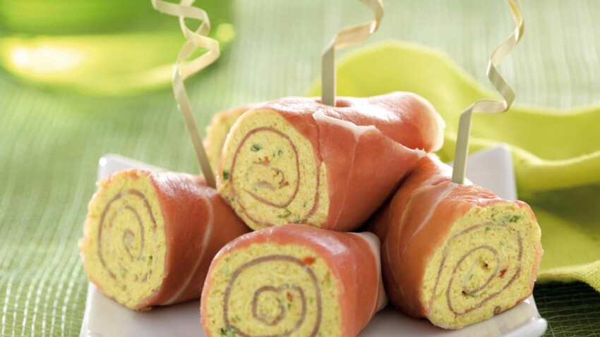

Quiche au Jambon
Une délicieuse quiche au jambon avec une croûte croustillante, des
œufs crémeux et du fromage fondant. Parfait pour le petit-déjeuner, le
brunch ou le dîner.
Recette :
Ingrédients :
- 1 pâte brisée
- 200 g de jambon cuit, coupé en dés
- 150 g de fromage râpé
- 3 œufs
- 250 ml de crème fraîche
- Sel et poivre, selon le goût
- Muscade râpée (optionnelle)
- Beurre pour le moule
Instructions :
-
Préchauffez le four : Préchauffez votre four à 180°C (350°F).
-
Préparez la pâte : Abaissez la pâte brisée et garnissez-en un
moule à tarte préalablement beurré. Piquez le fond de tarte avec une
fourchette.
-
Préparez la garniture : Répartissez les dés de jambon sur le
fond de tarte. Ajoutez ensuite le fromage râpé.
-
Préparez l'appareil à quiche : Dans un bol, battez les œufs.
Ajoutez la crème fraîche et mélangez bien. Assaisonnez avec du sel,
du poivre et éventuellement de la muscade râpée.
-
Versez l'appareil sur la garniture : Versez le mélange d'œufs
et de crème sur le jambon et le fromage dans le moule à tarte.
-
Cuisson : Faites cuire la quiche au four préchauffé pendant
environ 30 à 35 minutes, ou jusqu'à ce que la surface soit dorée et
que la quiche soit bien cuite à l'intérieur.
-
Refroidissement : Laissez la quiche refroidir pendant
quelques minutes avant de la couper en parts.
-
Servez : Servez la quiche au jambon tiède ou à température
ambiante. Elle peut être dégustée seule ou accompagnée d'une salade
verte.
Sandwich Club
Le classique sandwich club avec des couches de jambon, de dinde, de
bacon, de laitue, de tomate et de mayonnaise, servi entre des tranches
de pain grillé.
Recette :
Ingrédients :
- 3 tranches de pain de mie
- 100 g de jambon
- 100 g de dinde (ou de poulet), tranchée
- 4 tranches de bacon, cuites
- Laitue, tomate et mayonnaise pour la garniture
- Sel et poivre, selon le goût
Instructions :
-
Préparez les ingrédients : Cuisinez les tranches de bacon
jusqu'à ce qu'elles soient croustillantes. Lavez et préparez la
laitue et la tomate.
-
Assemblez la première couche : Sur une première tranche de
pain de mie, étalez une fine couche de mayonnaise. Disposez ensuite
une portion de jambon, de dinde, de bacon, de laitue et de tomate.
-
Ajoutez la deuxième couche : Placez une deuxième tranche de
pain de mie sur la garniture. Appuyez légèrement pour bien assembler
les ingrédients.
-
Répétez le processus : Répétez les étapes 2 et 3 en ajoutant
une nouvelle couche de mayonnaise, de jambon, de dinde, de bacon, de
laitue et de tomate.
-
Ajoutez la troisième tranche de pain de mie : Placez la
dernière tranche de pain de mie sur la garniture. Insérez des
cure-dents aux quatre coins du sandwich pour maintenir les couches
en place.
-
Coupez et servez : À l'aide d'un couteau bien aiguisé, coupez
le sandwich en diagonale pour obtenir deux triangles. Servez les
deux moitiés du club sandwich sur une assiette.
-
Accompagnez de frites ou de chips : Si vous le souhaitez,
servez le club sandwich avec des frites ou des chips.
- Dégustez : Profitez de votre délicieux club sandwich !

Roulés de Jambon et Fromage
Des roulés apéritifs faciles à préparer avec du jambon, du fromage à
la crème et des herbes. Parfait pour les fêtes et les occasions
spéciales.
Recette :
Ingrédients :
- 6 tranches de jambon
- 150 g de fromage à la crème
- 1 cuillère à soupe de ciboulette fraîche, hachée (facultatif)
- Poivre noir, selon le goût
- Laitue ou épinards pour la garniture (optionnel)
Instructions :
-
Préparez les ingrédients : Laissez le fromage à la crème
atteindre la température ambiante pour qu'il soit facile à étaler.
Hachez finement la ciboulette.
-
Mélangez le fromage à la crème : Dans un bol, mélangez le
fromage à la crème avec la ciboulette hachée. Assaisonnez avec du
poivre noir selon votre goût.
-
Étalez le fromage sur les tranches de jambon : Sur chaque
tranche de jambon, étalez une couche uniforme du mélange de fromage
à la crème.
-
Roulez les tranches de jambon : Roulez chaque tranche de
jambon avec le fromage à l'intérieur pour former des petits roulés.
-
Réfrigérez : Enveloppez les roulés dans du film alimentaire
et placez-les au réfrigérateur pendant au moins 30 minutes pour les
raffermir.
-
Coupez et servez : Retirez le film alimentaire et coupez
chaque rouleau en tranches d'environ 1 à 1,5 cm d'épaisseur.
Disposez-les sur un plat de service.
-
Ajoutez de la garniture (optionnel) : Pour une présentation
agréable, vous pouvez ajouter des feuilles de laitue ou d'épinards
sous les roulés, ou les servir sur un lit de verdure.
-
Ajoutez de la garniture (optionnel) : Pour une présentation
agréable, vous pouvez ajouter des feuilles de laitue ou d'épinards
sous les roulés, ou les servir sur un lit de verdure.
